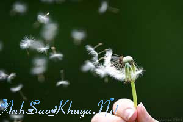

|
- Anh ơi , anh mua 100 bông hoa hồng cho em nhé !" - Để làm gì chứ ? anh đặt ra nhìu câu hỏi ????" - Nhưng em muốn cắm hoa hồng quá." vì em thấy nó đẹp...vì..vì....... - Thôi nào , anh sẽ mua hoa tặng em.Nhưng chỉ một bông thôi. - Tại sao lại thế ? Em sẽ share nửa tiền hoa với anh , ok ? - Tiền nong không phải vấn đề với anh , em biết mà.Nhưng anh chỉ muốn tặng em một bông thôi. - Không được mà.100 bông là 100 bông chứ.Anh tặng em đi.Tặng em 100 bông hoa đâu có nghĩa anh sẽ là người yêu em.
Em ngang ngạnh lắm.Muốn gì là làm bằng được.Không thèm đếm xỉa đến việc người khác nghĩ gì hay sẽ gây ra rắc rối gì.Em muốn có 100 bông hoa , anh đành phải mua 100 bông hoa cho em.Em thì lúc nào cũng cười cười “Ơ sao mà anh chiều em thế?”.Không chiều em sao được , khi mà ông trời sinh ra em đã quá bướng bỉnh và ngốc nghếch đến mức thông minh rồi. Ấn tượng nhất của anh về em là nói nhiều.Em nói suốt , nói khắp nơi , nói đủ thứ chuyện , nói không mệt. À đấy , em nói thì em không thấy mệt nhưng người khác nghe thì thấy mệt đến mức chả muốn chết.Nhưng nếu em im lặng , dù chỉ ba phút thôi , cũng đủ làm người khác thấy sợ. Anh sợ.......... Anh sợ những hôm em gọi điện thoại cho anh , chỉ nói “Anh à” rồi im lặng , đôi khi mới có tiếng rấm rứt trong ống nghe , đủ để thông báo với anh rằng “Em đang khóc” Anh sợ cả tiếng im lặng của em khi a gọi điện thoại để nói là a sẽ đi ! em gần như hét lên “Anh đi rồi đấy à? Anh bỏ em rồi đấy à ? Anh đi mà không nói với em một câu thế này đấy à ?”.Rồi em im lặng.Thậm chí cả một tiếng nấc cũng không có . Anh mệt nhoài “Nghe này ,anh đi rồi anh sẽ về.Em phải bình tĩnh , chỉ cần em bình tĩnh và ngoan ngoãn là được , nghe không ? Anh sẽ về”.Em cúp máy.Tiếng “cạch” cộc lốc . Anh thở dài. Để anh nhớ lại xem nào.Em có dễ thương hay đáng yêu không ? Chà , em sẽ hét ầm ĩ nếu anh dùng hai tính từ khác ngòai 2 cái này với em mất.Con gái thì ai mà chả thích được khen . em thì chỉ thix đc khen là mạnh mẽ và cứng cỏi cơ ! .Em cũng tự nhận đúng bản chất của mình đấy chứ.Anh biết , em sống mạnh mẽ lắm , em truyền sức mạnh của em cho bao nhiêu người , biết bao nhiêu người mắc chứng trầm cảm được em đưa tay kéo lại với cuộc sống yêu thương , biết bao nhiêu người rơi ngã được em đưa tay đỡ dậy.Em truyền sức mạnh của em cho bao nhiêu người , cho cả anh nữa.Nên anh mới thích gọi em là hâm.Cái sức mạnh em truyền đi , không biết với người khác thì như thế nào , chứ với anh , chỉ tòan là những hành động ngốc xít.Ngốc xít đến mức khiến anh bật cười đứng lên quên mất là mình vừa thất bại. ... - Anh này , anh sẽ khóc chứ , nếu em chết ? - Ừ , anh sẽ khóc . Lúc em hỏi anh câu đấy , anh gần như không nghĩ gì.Chỉ là một thoáng suy nghĩ lướt qua đầu anh.Một thoáng đủ dài để anh cảm thấy rằng nếu không có em , anh sẽ đau như thế nào. Đau và khóc.Anh sẽ khóc nếu em chết. " Tại sao anh lại khóc , nếu em chết " - Vì anh mất em. - Anh đừng khóc chứ , dù thế nào , em không tốt đến mức đáng để anh khóc đâu.Em chết , nghĩa là em bỏ anh.Em bỏ anh , nghĩa là em không tốt . Anh đừng khóc.Em có nhìn thấy không , anh đang đứng cạnh em , đang nhìn xuống gương mặt lạnh băng vẫn ánh lên nụ cười của em.Và anh không khóc.Không một giọt nước mắt.Kể từ lúc anh biết tin em không còn trên cõi đời này nữa. Đám tang em. Đông người lắm.Rất nhiều , rất nhiều.Những người họ hàng,những người bạn cùng lớp , thày cô giáo , hàng xóm , bạn thân của em từ hồi còn nhỏ , những người bạn chỉ quen qua YM và blog. Đông lắm.Nhiều người khóc.Mẹ em , bà em , cô em , các chị gái em khóc ngất trên chiếc hộp đựng em. Anh đứng cạnh em.Sao anh cười nhiều vậy ?Anh chỉ muốn đập vào cái hộp này , đánh thức em dậy.Màu trắng của những bộ vest , những tấm áo , những tấm vải , màu đỏ của hoa và ruy băng , bản nhạc trầm. Tất cả. Vừa lòng em chưa? Cả anh nữa.Vừa lòng em chưa?Anh đang mặc bộ vest màu trắng cài hoa hồng đỏ. Vừa lòng em chưa? Rất nhiều người ở cạnh em giờ phút này.Rất nhiều người khóc. Vừa lòng em chưa ? Vừa lòng em chưa ? Rất nhiều người không khóc.Bố em , ông nội em , hai người đàn ông của đời em đang đứng lặng cạnh anh.Ba ngày rồi.Từ ngày người ta vớt được thi thể em từ biển , từ khi họ nắm lấy bàn tay nhỏ bé gầy guộc và lạnh buốt của em lần cuối , từ khi em được đưa vào cái hộp màu trắng này , họ vẫn lẳng lặng như vậy.Em à , họ không khóc.Em luôn gọi họ là người đàn ông của đời em , là trụ cột của em và gia đình em.Mọi người nói họ thật là bình tĩnh , khi mà tất cả suy sụp , họ vẫn hòan thành trách nhiệm trụ cột của mình : lo cho em một cái đám đúng như những gì em đã viết trong lá thư cuối gửi họ.Họ không khóc.Trước khi chết , em có hỏi họ câu hỏi đấy không ? Trước khi chết , em có hỏi họ “Nếu con chết , bố và ông có khóc không?” không? Anh không thấy họ khóc.Những ngón tay họ bám rất chặt vào cái hộp đựng em. Rất nhiều người không khóc.Anh biết , em đã chuẩn bị sẵn tinh thần cho họ Anh vẫn không khóc.Anh cũng là người đã được em chuẩn bị sẵn tinh thần rồi , đúng không ? Thế nên anh mới không khóc. Không khóc vì đã được chuẩn bị tinh thần ? Hay vì không biết phải khóc thế nào cho em tỉnh dậy ? Em vẫn thường nói “Khi người ta đau quá , người ta sẽ không khóc nổi nữa đâu” Tại sao em lại chết ở biển ? Em nói em sợ biển kia mà ? Em sợ cái mênh mông của biển như muốn nuốt chửng cả con người ta kia mà? Sao em lại chết ở biển ? Anh không hiểu về em.Không hiểu rất nhiều điều.Không hiểu về cả việc em đột nhiên bỏ đi như thế Hay là em trả thù anh? Trả thù việc anh để em lại mà ra đi ! hay.......vì a sẽ rời xa e 1 lúc nào đó ! 1 khoảng thời gian nào đó.......Nhưng anh xa em chỉ 1 khoảng thời gian, chỉán lúc nào đó thôi.Còn bây giờ , sau 1 khoảng thời gian nữa, em có trở về không ? Anh thắp nến. Đủ 100 ngọn nến.Lung linh. Đẹp lắm Anh cầm con gấu bông nhỏ em cho anh.Khi nào anh buồn , hãy ôm nó , như ôm em , anh nhé. Anh mang theo 100 bông hồng leo.Thơm lắm Trên tay anh bây giờ là một đôi nhẫn.Em đã làm mất chiếc nhẫn bạc của anh tặng ! (mãi bây giờ anh mới biết em lén giấu nó đi để mang cùng em lên thiên đường).Anh mua đôi nhẫn này , bằng vàng trắng hẳn hoi nhé.Chắc em sẽ thích lắm.Anh định sẽ đeo vào tay em , chờ em lớn một chút nữa , rồi sẽ đi may cả váy cưới trắng ruy băng đỏ.Anh đã định như thế. !!! Bản nhạc “To Where You Are” vẫn đang vang lên trong không gian.  Em có ở trên thiên đường không nhỉ ? Chắc là có.Thế ở trên cao thế này , em có nhìn thấy anh không nhỉ?Thế ở trên cao thế này , anh có đến được chỗ em không ? Những bước chân đưa anh ra xa dần , xa dần.Không phải là biển.Nhưng anh vẫn muốn tiến vào cái không gian mênh mông trước mắt ấy , cái không gian phía trên là những ngôi sao và phía dưới cũng là những ngôi sao.Anh muốn nhìn thấy nụ cười em.Như nhìn thấy những ngôi sao. Xa thêm một chút nữa.Xa thêm một chút nữa.Anh có thể chạm được vào em ? Anh ngồi trước ngôi mộ của em.Vẫn còn rất nhiều những vòng hoa trắng và những bông hồng đỏ.Anh nhìn thấy cả một giỏ lan tiêu màu vàng rất đẹp.Anh nhìn thấy cả một con ốc biển rất to đặt ngay trên mộ. Bố em đến , cùng với ông nội em.Họ đặt trên mộ em một con gấu bông rất to.Bố em quỳ xuống bên cạnh anh " Khi còn sống , con bé rất thích gấu bông.Một tuần trước khi nó ra đi , nó chạy đến , ôm chầm lấy bác và tíu tít “Bố à , lâu lắm rồi bố không tặng con một con gấu bông nào đấy nhé”.Sắp sinh nhật nó , vậy mà.....Ai mang hoa lan tiêu đến thế này ? Màu vàng , con bé thích lắm đây." Và bố em khóc. Anh nhìn lên , nước mắt của ông em cũng rơi ra từ bao giờ.Anh im lặng Anh à , cuộc sống có nhiều lựa chọn , dù thế nào đi chăng nữa , anh cũng hãy chọn niềm vui và yêu thương , anh nhé.Hãy tin rằng chúng ta sẽ ổn.Hãy sống tốt , anh nhé.Phải sống đấy , dù sống khó khăn , vất vả , sống đau khổ hay mệt nhọc , nhất định phải sống , anh nhé. Để hái hoa bồ công anh cho em.Anh biết mà , một mình anh biết , em thích bồ công anh. Lời của gió hay lời của gió Nguồn: ASK sưu tầm || Tham gia bình luận TẠI ĐÂY ||
Bạn vô tình đọc ở đâu đó một câu chuyện tình cảm động hoặc một câu chuyện do chính bạn viết ra. Hãy đến với chúng tôi để cùng nhau chia sẻ: wWw.anhsaokhuya.net
Chung tay vì một thế giới online lành mạnh !
|